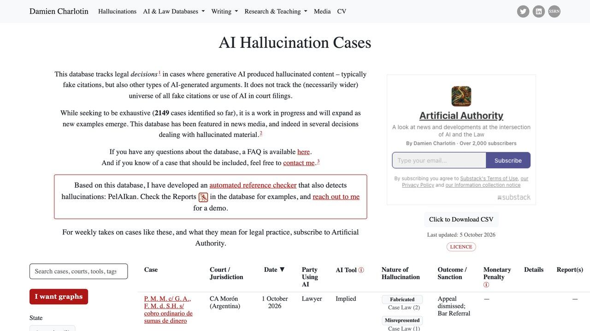

Alucinaciones de la IA: cómo detectar cuando se está inventando algo
Por qué los modelos inventan URLs, citas y librerías inexistentes con absoluta convicción, en qué tareas ocurre más y técnicas prácticas para forzar la honestidad epistémica.
Los modelos de lenguaje no consultan una enciclopedia verificada al generar una respuesta: calculan la probabilidad estadística de la siguiente palabra según patrones aprendidos en el entrenamiento. Cuando un modelo redacta un informe con un tono impecable y categórico, esa seguridad superficial no mide rigor fáctico, sino plausibilidad. La elocuencia no es correlato de la verdad.
¿Cómo se llama la información inventada que produce una IA?
Se llama alucinación. Ocurre cuando un modelo generativo responde con datos, citas, enlaces o librerías que no existen, pero con total seguridad. No es sesgo, ni sobrecarga, ni entrenamiento: es que el modelo predice lo que suena bien, no lo que ha comprobado.
MAPA RÁPIDO DE RIESGO
Referencias exactas inventadas
- Citas bibliográficas y DOI.
- Nombres de funciones de librerías poco comunes.
- Estadísticas y porcentajes aislados.
Deriva en contexto largo
- Resúmenes de textos muy extensos.
- Líneas de tiempo con muchos matices.
Tareas ancladas al texto dado
- Reescritura de estilo y tono.
- Traducción directa de un texto concreto.
Esto no es intuición: el leaderboard público de Vectara mide esto midiendo miles de resúmenes reales y encuentra justo este patrón — las tareas cortas y ancladas a un texto concreto han mejorado mucho, mientras que las conversaciones largas de varios turnos siguen siendo, con diferencia, donde más se inventa.
Los cuatro tipos más peligrosos en el trabajo profesional
Librería fantasma
El modelo sugiere instalar un paquete que no existe en los registros oficiales. El riesgo real: alguien puede publicar después un paquete malicioso con ese mismo nombre, esperando a que otro lo instale sin comprobarlo.
Citas y autoría falsas
Al pedir referencias, el modelo puede combinar nombres reales de investigadores con títulos de artículos que no existen, con apariencia perfectamente creíble.
Cálculo aritmético intermedio
Un modelo de lenguaje no tiene una calculadora interna. En promedios ponderados o cálculos con varios pasos, puede simular una operación con apariencia ordenada pero cifras incorrectas.
Restricciones ignoradas en silencio
Si le pides "solo empresas de la Unión Europea" y encuentra una fuera de ese criterio que le parece relevante, puede incluirla sin avisar de la excepción.
Estos cuatro tipos comparten un rasgo común: en ningún caso el modelo "sabe" que se está equivocando. No hay una señal interna de duda que puedas detectar en el tono de la respuesta — la confianza expresada es la misma tanto si el dato es correcto como si es inventado. Es exactamente esta ausencia de señal de alarma la que hace que verificar lo verificable, en vez de confiar en la seguridad aparente del texto, sea la única defensa fiable. Lo mismo vale cuando el dato no viene de la memoria del modelo sino de un archivo que le has pasado: una cifra mal leída en un PDF escaneado llega con el mismo aplomo que una bien leída, y por eso conviene saber cómo procesa la IA las imágenes y los PDFs antes de fiarte de lo que extrae de ellos.
Dos problemas distintos: inventar de más y omitir de menos
Cuando se habla de "alucinaciones" se suele pensar solo en el caso de invención activa: el modelo afirma algo falso con seguridad. Pero hay un segundo tipo de error, menos discutido y casi igual de peligroso en contextos profesionales: la omisión silenciosa. Ocurre cuando el modelo tiene la información correcta disponible (en el documento que le has pasado, o en el propio hilo de conversación) pero, al resumir o sintetizar, deja fuera un matiz importante sin señalarlo — no porque lo desconozca, sino porque el proceso de compresión de un texto largo en uno más corto tiende a descartar los detalles que el modelo juzga "menos centrales", aunque para ti sean el detalle que cambia la decisión.
La distinción importa porque las estrategias de mitigación son distintas para cada caso. Contra la invención activa, la defensa es pedir fuentes y verificar lo verificable, como se explica más abajo. Contra la omisión silenciosa, la defensa es distinta: pedir explícitamente que el resumen incluya cualquier excepción, condición o matiz presente en el original, en vez de asumir que "resumir bien" significa automáticamente "no perder nada importante". Un resumen que omite una cláusula de cancelación de un contrato no es técnicamente una invención, pero el daño práctico es el mismo o peor que si el modelo hubiera inventado un dato falso.
Por qué unos modelos alucinan más que otros en la misma tarea
No todos los modelos tienen la misma tendencia a inventar, y la diferencia no siempre va en la dirección que se esperaría. Modelos más nuevos y con más capacidad de "razonamiento" en ocasiones muestran tasas de alucinación más altas en preguntas muy específicas sobre hechos concretos (nombres, fechas exactas), precisamente porque generan respuestas más elaboradas y con más pasos intermedios donde puede colarse un dato inventado, comparado con un modelo más simple que se limita a responder de forma más directa.
Esto tiene una implicación práctica: no asumas que el modelo "más potente" o más reciente alucina automáticamente menos en cualquier tarea. Para preguntas de hechos muy específicos y verificables, conviene comprobar el dato independientemente del modelo usado, en vez de confiar en que la sofisticación general del modelo se traduce en menos errores fácticos concretos.
«Un modelo de lenguaje no miente porque no tiene concepto de verdad: simplemente une palabras que suenan convincentes.»

En qué sectores el coste de una alucinación es más alto
El riesgo real de una alucinación no depende solo de la probabilidad de que ocurra, sino de lo caro que sale no detectarla a tiempo. En sectores legales, un modelo que cita jurisprudencia inexistente ha provocado ya sanciones documentadas a abogados que presentaron escritos sin verificar las citas generadas por IA — el tribunal no distingue entre "el abogado mintió" y "el abogado confió en una herramienta sin comprobarla", el resultado disciplinario es el mismo. En el ámbito médico y de salud, una recomendación de dosis o interacción de medicamentos inventada tiene un coste potencial que no admite el margen de error que sí es tolerable en, por ejemplo, redactar un borrador de correo interno.
En el extremo opuesto están las tareas de bajo riesgo: generar ideas para un titular, hacer una primera versión de un texto creativo, o resumir el ambiente general de una conversación larga sin que ningún dato puntual vaya a usarse para tomar una decisión. Ahí una alucinación ocasional apenas tiene coste, porque el resultado se revisa y se edita de todas formas antes de usarse. La regla práctica que se deriva de esto: el nivel de verificación que aplicas a una respuesta debe ser proporcional al coste real de que ese dato concreto esté mal, no un nivel fijo de desconfianza aplicado por igual a todo lo que genera un modelo.
Un ejercicio útil para calibrar esto en tu propio trabajo es clasificar de antemano, antes de escribir el prompt, en qué categoría cae la tarea que vas a pedirle al modelo: ¿el resultado se va a usar directamente sin revisión humana adicional, o va a pasar por alguien más antes de tener efecto en el mundo real? Esa sola pregunta, respondida con honestidad antes de empezar, suele bastar para decidir si conviene pedir fuentes explícitas desde el primer prompt o si basta con la revisión habitual que ya se le da a cualquier borrador.
Dos termómetros públicos: el ranking de Vectara y la base de casos judiciales
Hay dos fuentes abiertas que sirven para poner cifras a esta guía, con sus límites.
1. El ranking de alucinaciones de Vectara. Mide con su modelo HHEM cuántas veces un modelo introduce datos que no están en el documento cuando lo resume. En la última actualización que muestra su repositorio (22 de septiembre de 2026), las tasas van desde cerca del 2 % en los mejores resultados hasta más del 10 % en otros modelos. Por ejemplo, GPT-6 Sol aparece con un 6,5 % y GPT-6 Astra con un 8,7 %, es decir, el modelo más potente de la familia no es el que menos inventa al resumir. Es lo que explica la sección 3.
Tres cautelas al leerlo: mide solo resumen de documentos, no preguntas de cultura general; usa un modelo automático como juez, que también puede equivocarse; y la tabla se actualiza con frecuencia, así que no te quedes con una cifra concreta. Úsalo para comparar tendencias, no para elegir un modelo a ciegas.
2. La base de casos judiciales de Damien Charlotin. Recoge resoluciones en las que un tribunal detecta contenido inventado por IA en un escrito. El 16 de octubre de 2026 contaba 2.199 casos: 1.501 en EE. UU. y 8 en España. Casi seis de cada diez corresponden a personas que se defendían sin abogado (1.266) y cerca de cuatro de cada diez a abogados (871). Es un recuento de casos públicos que alguien ha identificado, no una medida de cuántos escritos con IA contienen errores.
Si tu trabajo termina en un documento con consecuencias (escrito legal, informe a un cliente, datos de un contrato), la verificación de cada cita y cifra es tuya, no del modelo.
No quiere decir que la IA sea inútil en esos campos. Quiere decir que sirve para borradores y para encontrar pistas, y que lo citado debe comprobarse en la fuente original.
Para reducir el problema en tu propio flujo, combina esta guía con grounding: cómo anclar a la IA a datos reales y RAG explicado. Para el caso concreto de contratos, mira los límites en revisar contratos con IA.
Protocolos prácticos de detección y mitigación
door_open 1. Dale una salida honorable
Por defecto, un modelo evita la respuesta vacía. Dale permiso explícito para no saber algo:
"Responde solo con la información del <contexto>. Si no se deduce de forma clara, responde exactamente: 'DATOS INSUFICIENTES EN FUENTE'. No infieras ni extrapoles."
sync_alt 2. Ancla la respuesta a un documento real (RAG)
No preguntes por hechos recientes o privados a la memoria del modelo. Dale el documento original con citas de fragmentos literales; si no puede asociar una afirmación a un párrafo concreto, descarta esa afirmación.
terminal 3. Deja que el cálculo lo haga código, no el modelo
Para cualquier tarea cuantitativa, pide que el modelo escriba y ejecute un script en vez de calcular "de memoria". El resultado debe venir de la ejecución, no de la predicción de texto.
travel_explore 4. Usa búsqueda web activada para hechos recientes
Para preguntas sobre eventos recientes o información que cambia con frecuencia, usa un asistente con capacidad de búsqueda web activada en vez de fiarte de su conocimiento interno, que tiene una fecha de corte y no se actualiza solo. La combinación de búsqueda real más generación de texto reduce mucho el margen para inventar, porque el modelo tiene datos frescos delante en vez de tener que extrapolar de memoria.
compare_arrows 5. Pide una segunda opinión con otro modelo para datos críticos
Para un dato de verdad importante, verificarlo con un segundo modelo distinto (o una segunda pregunta formulada de otra forma al mismo modelo) es una comprobación barata: si ambos coinciden en el mismo dato específico y verificable, la probabilidad de que ambos hayan inventado exactamente lo mismo es baja. Si difieren, es una señal clara de que hace falta verificación externa antes de dar el dato por bueno.
psychology_alt 6. No confundas que el modelo "se disculpe" con que haya corregido el dato
Cuando señalas un error, el modelo casi siempre responde con una disculpa y una versión corregida — pero eso no garantiza que la nueva versión sea correcta, solo que suena más segura de sí misma. Es tan capaz de generar una segunda cifra igualmente inventada como de dar con el dato real, sobre todo si tu corrección fue una pregunta genérica ("¿seguro que es así?") en vez de aportar tú mismo el dato correcto o pedirle explícitamente que busque la fuente antes de corregir.
rule 7. Divide tareas largas en pasos verificables por separado
Pedir un informe completo de una tirada (introducción, datos, análisis y conclusiones en un solo turno) da más superficie para que se cuele un dato inventado en algún punto intermedio sin que lo notes al leer el conjunto. Pedir cada bloque por separado y revisar cada uno antes de pasar al siguiente hace que cualquier error quede aislado y sea más fácil de detectar, en vez de diluido entre varios párrafos que parecen coherentes entre sí.
Checklist antes de publicar o enviar un entregable
Esta lista funciona mejor como hábito de equipo que como responsabilidad individual dispersa. Si varias personas usan IA generativa para producir entregables similares, merece la pena convertir esta checklist en un paso explícito del proceso de revisión — por ejemplo, como último punto antes de aprobar cualquier documento que haya pasado por un asistente de IA — en vez de confiar en que cada persona la recuerde por su cuenta. La experiencia de los equipos que ya lo hacen así es consistente: la mayoría de los fallos no ocurre por desconocer el riesgo, sino porque nadie tenía asignado explícitamente el paso de comprobarlo antes de enviar.
Un caso real de cómo se detecta una alucinación
Imagina que le pides a un asistente de IA un resumen de la normativa de una subvención pública, incluyendo el plazo de solicitud. El modelo responde con seguridad: "el plazo de presentación finaliza el 15 de marzo". La respuesta suena precisa y específica — precisamente el tipo de dato que más invita a darlo por bueno sin comprobar, porque "inventar una fecha exacta" no encaja con la intuición de cómo se comporta normalmente alguien que miente.
El proceso de verificación no requiere desconfiar sistemáticamente de todo lo que dice el modelo, solo aplicar la regla de esta guía: cuanto más específico y verificable es un dato, más vale la pena comprobarlo antes de actuar sobre él. En este caso, bastaría con pedirle al modelo la fuente concreta de esa fecha (¿qué documento oficial la menciona?) y, si no puede citar una fuente verificable, o si la cita de repente cuando se le pregunta, tratar el dato como no confirmado hasta comprobarlo directamente en la web oficial correspondiente. Este pequeño hábito — pedir la fuente antes de actuar sobre un dato importante — detecta la gran mayoría de alucinaciones fácticas antes de que causen un problema real.
Un segundo caso, esta vez de "librería fantasma": al pedir ayuda para procesar un archivo Excel en Python, el modelo sugiere import pandas_excel_tools y da por hecho que ese paquete existe con una función concreta para el caso. El código tiene buen aspecto y hasta viene con comentarios explicativos razonables, pero el paquete no existe en el índice oficial de PyPI. Ejecutarlo directamente daría un error de importación evidente — pero el riesgo real no es ese error visible, sino lo que pasaría si alguien, sabiendo que los modelos cometen este error con cierta frecuencia, publicase un paquete malicioso con exactamente ese nombre a la espera de que otro desarrollador lo instale sin comprobarlo primero, confiando en que "si el asistente lo sugirió, debe de existir".
La verificación aquí es mecánica y rápida: antes de instalar cualquier paquete sugerido por un asistente, una búsqueda de 10 segundos en el índice oficial correspondiente (PyPI para Python, npm para JavaScript, crates.io para Rust) confirma si existe de verdad, cuántas descargas tiene y desde cuándo se mantiene. Un paquete con cero historial, publicado hace pocos días y con un nombre que coincide sospechosamente con lo que un asistente de IA "inventaría" es motivo suficiente para no instalarlo sin revisar antes el código fuente.
Ambos casos comparten una misma lección de fondo: la alucinación no siempre parece un error evidente, a menudo tiene la forma exacta de algo correcto. Esa es la razón por la que "parece razonable" nunca debería ser el criterio final para dar por buena una información importante — el criterio final es siempre si se puede verificar de forma independiente, no si suena convincente.
Preguntas frecuentes
Redacción El Telar
Mesa técnica centrada en auditoría de sistemas generativos y mitigación de riesgos operativos.